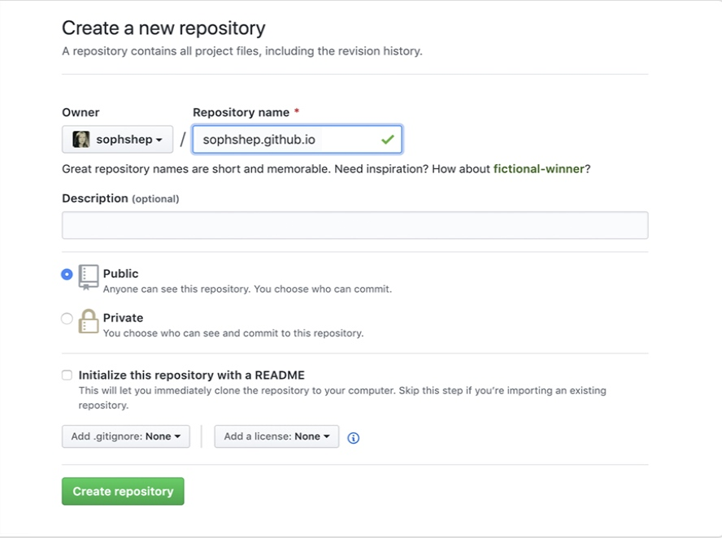
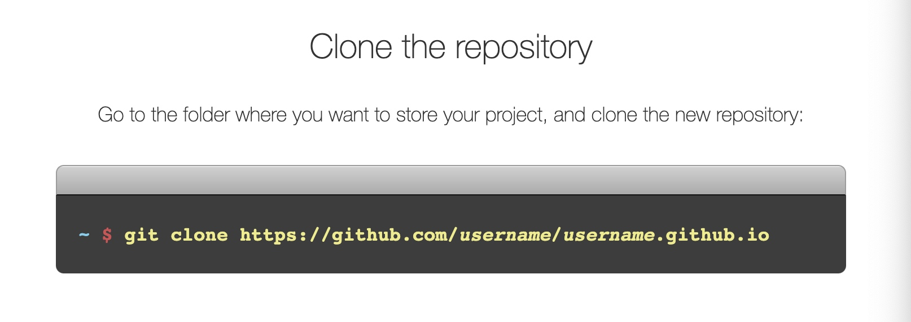
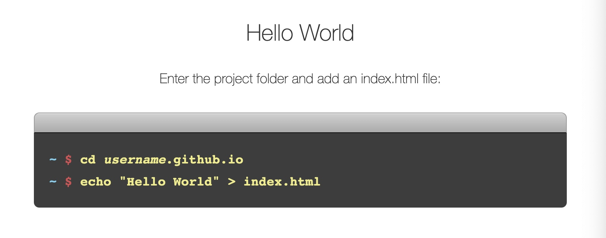
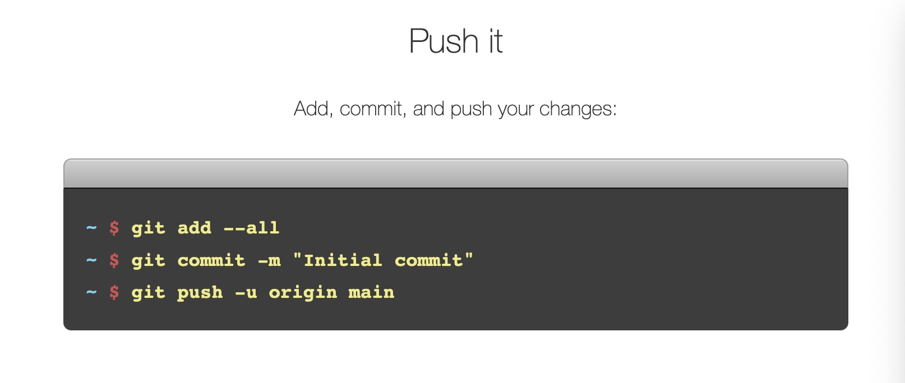
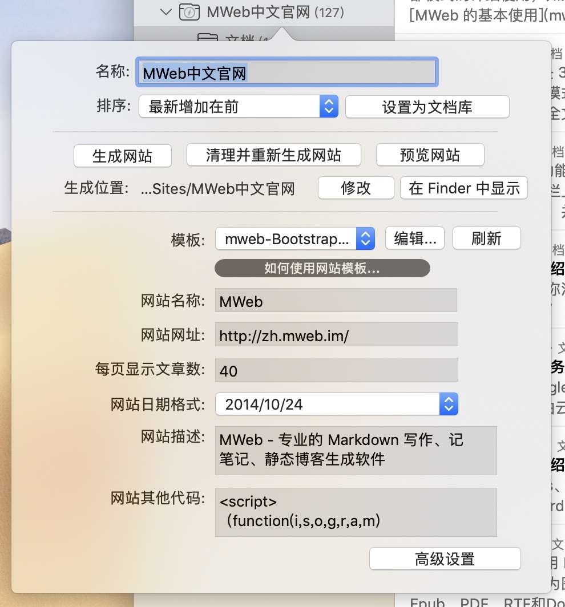
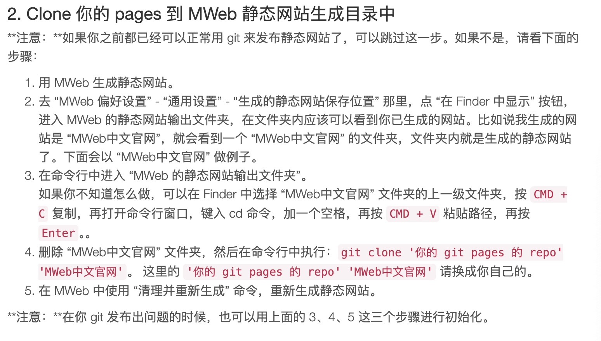
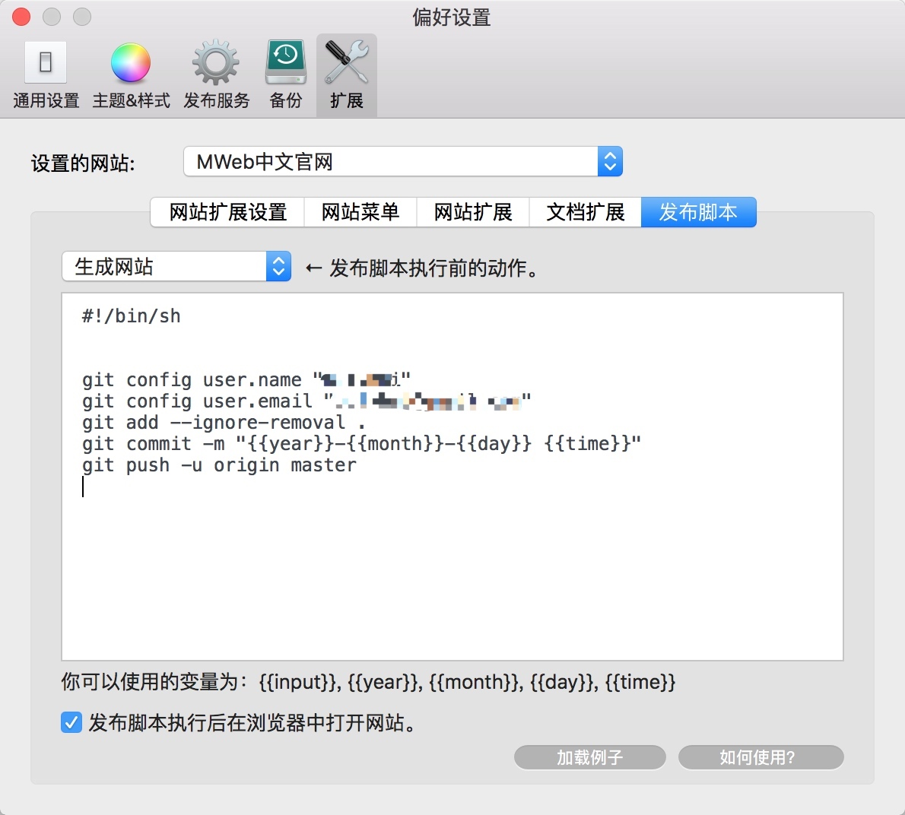

写一下 MWeb 推送静态网站部署到 Github 的个人体验
虽然 MWeb 官方有教程，但对于新手来说还是会遇到很多问题，比如如何在 GitHub 上部署个人页面，发布脚本命令也会遇到各种问题，只能一步一步的找 Monica ai 问，一步一步的解决。
最终流程倒是挺简单，但是过程会踩很多坑，还看不懂踩的什么坑。下面我大概写一下我的部署流程，尽量简单无脑。
第一步 配置 GitHub Pages
1.创建一个新仓库（repository）
- 注册或登陆自己的 GitHub
- 点击页面右上角自己的用户头像
- 点击 Your repositories
- 点击新页面右上角 New
- 参考以下页面创建一个新的仓库。

重点注意：仓库名使用「自己的用户名.github.io」，比如以上案例，所有者的名称是 sophshep，后面要再写多一遍sophshep 再加上「.github.io」。这个地方是我踩的深坑，我以为可以自定义名称，没想到不能乱写要和所有者的名称一样才行。
2.配置个人密匙
- 点击页面右上角自己的用户头像
- 点击 Settings
- 点击左侧栏 Developer settings
- 点击左侧栏 personal access tokens > Tokens（classic）
- 点击右上角 Generate new token > Generate new token(classic)
- 新页面这里 Expiration 这里选 90 天或更少，其他什么都不选拉到最下面创建
- 创建之后显示的密匙最好自己复制粘贴到其他地方备用，以后是看不到这个密匙的
3.按照https://pages.github.com/页面走一遍
我也不知道有没有必要走这一遍，但是我是按照这个页面操作了一遍，建议各位跟我一样。
注意：我是选的 A terminal，命令流程我就截图展示，大家也可以直接看网页。



以上命令执行完之后，如果不出意外，就可以试着访问一下自己的主页「https://username.github.io.」看看 Hello World。
以上，GitHub Pages 就配置好了，接下来是 MWeb。
第二步 配置 MWeb 以及 发布脚本
参考：https://zh.mweb.im/zh-mweb-static-blog
参考：https://zh.mweb.im/how_to_use_shell_script
1.体验静态网站最简单的方式
打开 MWeb，在文档库里新建一个分类（文件夹），放几篇自己写的文章进去。
- 右键这个分类，点击编辑
- 点击弹出页面右下角「设为静态网站」，之后会弹出以下界面

模板那里是网站主题，可以去官网下载一些主题，或者自己研究一下怎么自己写主题。其他位置都可以按自己需要填写，不过网站网址这里需要注意填写上面配置的 GitHub Pages 的网址，比如我的是：https://yicaoren.github.io/ - 只是体验静态网站，那点击上面生成网站 > 预览网站，就能看到自己的网页了。
- 其他设置看官网说明，就不细说了。
2.配置「发布脚本」
这里我直接截图官网说明，并说明我操作失误的地方。因为前面已经配制好的 GitHub Pages，所以直接从第 2 步开始。
2.Clone 你的 pages 到 MWeb 静态网站生成目录中

注意：
- 第 4 点这里，说要删除原本生成的那个静态网址文件夹，是真的要删除，大家不用担心会影响原本 MWeb 中的内容，可以放心删除。
- '你的 git pages 的 repo'这个填这个网址「https://github.com/yicaoren/yicaoren.github.io」，把 yicaoren 换成你们自己的用户名。
- 注意'你的 git pages 的 repo' 'MWeb中文官网'中间是有空格的，并且实际写命令的时候不用有单引号。
3.配置发布脚本
在下图，在 “MWeb 偏好设置” - “扩展” - “发布脚本” 中配置。

建议复制以下我的内容，因为我用着没问题：
#!/bin/sh
# Please set the name and email.
# Because MWeb can't get your github global setting.
git config user.name "yicaoren"
git config user.email "yicaoren@gmail.com"
git add --ignore-removal .
git commit -m "{{year}}-{{month}}-{{day}} {{time}}"
git push -u origin main
以上配制好之后，就可以关掉 MWeb 的偏好设置，返回 MWeb 应用界面，找到之前设置过静态网址的分类，右键点击最下面的「复制发布脚本命令并打开终端」，会自动打开终端，直接粘贴回车即可。
刚操作完之后不要着急打开自己的网页看效果，因为没那么快。过几分钟再打开，就能看到自己配置好的主页了。有新增内容在 MWeb 的静态网址分类中之后，重新发布脚本命令即可。
我的使用就到这，之后如果遇到其他命令行的错误，麻烦找 chatgpt。


德龙ECAM22.110.SB调试
【咖啡】德龙全自动咖啡机22.110SB（日常咖啡制作）_哔哩哔哩_bilibili
- 产品设置相关
checkwhatsleft你应该用单份浓缩的做，做2次，因为它粉量很低，在最高设置也就勉强10克左右，德龙350这类机子，就是14克左右。你的粉饼厚度，你自己拿着看看就会明白。磨豆的刻度也要设置在1，不过总体而言，全自动都是压力系统，做不出豆子味道来的。另外，打拉花牛奶，你需要去掉外管，能顺利打的。
checkwhatsleft单份espresso，你下面垫一个电子秤，淘宝十几元那种很小的就行。一份espresso放20g出来就按停止，但做咖啡之前，让它热机，比如多放几次热水，用蒸汽棒，不开蒸汽，多放几次热水。它是加热块不是锅炉，在机身的左侧的靠近接水盘位置，等你摸到那里热起来温度了，开始做。 然后做2次单份espresso。 去掉蒸汽的外管后，内管，淘宝买1.2元一堆的塑料扎带，扎起来，在内管顶部位置，防止它脱离，打拉花需要的牛奶会没问题，奶缸最好用350ml以下的小的，因为它内管，太短。
checkwhatsleft豆子尽量用深烘培，不是店家写的，而是你打开袋子会发现，深烘培是颜色很深的那类。现在很多店铺卖豆子，不懂东西很多的，就是写着深烘培，到手一看是中烘培，没别的，就因为德龙这类机子，温度提升不了多少，中烘培需要的高温它给不了，所以用深烘培。我记得只有德龙350.15开始以上的机子，才能选择温度变化，但是那个变化，还是不足以做中烘培。
checkwhatsleft哦，22.110.SB也有调节温度的设置，刚刚下载了英文说明书看了看，都有。不过，温度最高设置的时候，它还是不够高，对于中烘豆子来说。
_-bin-_333：机子的水温是可以调的，机子在关机的状态，电源按在I的位置，长按左侧浓缩单杯咖啡键，大概8秒左右，就会闪烁，显示屏上也会出现标识，按到第四级，最大级，就是最高水温
mrglange回复 @checkwhatsleft :请问怎么主动释放热水呀？
checkwhatsleft回复 @mrglange :那些回复很早，我也不记得说的哪部分是释放热水了。如果热水通过管道，让管道热起来，德龙和别的全自动，都有一个一样的图标，在机身控制盘那，就是斜角的水滴+一个外部圆圈的那个图标，它是清洗煮咖啡管道的键。
- 咖啡豆推荐
ss卡索弥尔ss：同款机器... 研磨刻度1，单浓缩，浓度最大，做出来的真的是一点咖啡豆风味都没有，跟刷锅水一样... 咖啡豆是 illy中烘焙..... 有点小后悔...
Aresgogo：我现在放在办公室喝美式，用的柯林的豆 双杯份的总共160ml 还可以
iorall回复 @ss卡索弥尔ss :豆子的新鲜度很重要，意式豆都很便宜。像sinloy他们家的焦糖拼配，明谦的教父，四人的黑骑士还有很多，50左右一磅买一次够我喝一个月
- 清洁保养
- 残渣、接水盘每日清理一次
家庭影院搭建
硬件
电视盒子：Apple TV 4K
电视机：Sony 65X9000F
NAS：群晖 DS918+
路由器：网件R7000
2021年新增
投影仪：极米 Z8X
搭建
全部网络入口为网件R7000，NAS网线直连，电视盒子Wi-Fi 5G，Apple TV通过HDMI2.1线传输至电视。
更新：
2021年3月13日将广电网络改为电信网络，客厅使用网件 R7000 作为所有网络的入口，NAS 放置于客厅直接网线连接 R7000，Apple TV 也放置于客厅直接用网线连接 R7000，这样 NAS 与 Apple TV 相当于网线互连，传输速度可达 300M/S 以上，基本解决看4K电影的卡顿问题。
科学上网
通过 R7000 安装插件，进行科学上网，达到全屋所有设备都处于科学上网的状态。
具体操作为：
路由器刷梅林固件，离线安装科学上网插件，复制网络提供商提供的V2Ray地址，填入插件内，即可开启科学上网。
目前在用的加速器：
奈飞客-国内奈飞4K节点netflix网飞加速tizi服务|HBO视频4K加速解决方案
Apple TV 4K
以前播放NAS里电影的方案是索尼电视安装 Kodi ，通过SMB读取 NAS里的电影，整个过程有点折腾，搜刮效果也比较慢，每次动一下 NAS 就得折腾好久。后面听说 Apple TV 这方面非常方便，然后又遇到了 Kodi 要重新设置，就极大的促使我购买 Apple TV 。
使用 Apple TV 需要港区、美区或其他国外区的 App Store 账户，如使用国内账户登录，则不显示 App Store 无法下载应用。目前我使用 Apple TV 主要用来看 Netflix、NAS里的电影以及电视直播。以下详细说说这几个功能使用的方式：
流媒体视频
Apple TV支持4K和杜比视界，主流的流媒体视频的应用为 Apple TV+、Netflix、HBO、Hulu、Disney+、YouTube 等。其中除 Apple TV+ 之外，其余应用均需要科学上网才能观看。
- Apple TV＋
领取一年免费会员：
新买的 Apple 设备送一年 Apple TV＋，领取时需要绑定相关账户的付款方式（信用卡、支付宝、礼品卡）。
其中港服不支持绑定大陆信用卡（包括 VISA ），香港支付宝需要用香港电话号码才能开账户，香港礼品卡在淘宝有卖。前面两种方式要实现比较麻烦，所以我选择了香港礼品卡，但是由于担心黑卡，不敢在淘宝或者闲鱼买，而疫情的原因现在也无法过香港。走投无路之时，想起来因工作原因查香港产品价格的 Price，搜了下果然有卖，加了卖家 WhatsApp 终于顺利解决。
另外需要注意的是 Apple 有两种礼品卡，一种是 App Store 礼品卡，这种用来购买数字服务；另一种是 Apple Store 礼品卡，用来购买硬件。
- Netflix
想要观看 Netflix 必须科学上网，其中只有香港、台湾、新加坡会提供中文字幕。Netflix 购买会员之后就能观看里面所有内容，不会再有其他收费项目。
目前我是加入了别人家庭组，季付 45 元。由于第一次与人合租家庭账户，专门了解一下规则：
- 一般是五人一起合租;
- 最多四人同时在线观看;
- 一个账户可以登录不同客户端，但不允许同时观看，以免影响其他合租成员;
- 合租方式为合租主号开通家庭账户，所有人通过主号的账户及密码登录，账户中会分别设置各自的登录名;
- Netflix 主要识别 IP 地址来确定观看的地区，而不管开通会员的地区;
其他的除 YouTube 之外，由于语言问题，没有使用另外的流媒体。
连接 NAS 看电影
主要使用 infuse 5 来实现这一项，infuse 需要付费购买，属于买断制。
看电视台直播
看直播则主要使用 iplayTV ，这个最大的问题是直播源的获取，网上可以搜到很多种网友制作的直播源，另外也可以自己截取家里电视台的信号制作直播源。
第一种我找到了很多，也能看，但大部分连接速度都比较慢，观看的时候也经常卡，在试用了很多源之后，只能无奈放弃;
第二种需要自己开通电视信号不划算。
最终的方式还是在淘宝买了一家店铺提供的直播源，目前使用比自己找的稳定很多，不过有时也会有点卡，使用上还是比不了各大电视信号提供商的盒子。
国内视频网站
目前是直接在电视上安装相应的应用来观看，也在考虑通过 AirPlay 隔空播放，毕竟 TV 版会员价格贵。
个人知识管理系统1.0
PARA体系
Project："与目标关联的一系列任务，每个任务都有明确的完成期限"。
例如：完成一个app的设计原型;一个项目开发计划;执行业务开发活动;写博客文章;最终确定产品规格;参加会议
Area of responsibility："一个需要持续一段时间的任务领域"。
例如：健康;财务、专业发展;旅行;爱好;朋友;公寓;汽车;生产力;直接下属;产品开发;写作
3.Resource："持续感兴趣的话题或主题"。
例如：习惯养成;项目管理;超人主义;咖啡;音乐;园艺;在线营销;SEO;室内设计;建筑;记笔记
Archives：包括"其他三个类别以外的非活动项目"。
示例包括：已完成或非活动的项目;不再承诺维护的Areas;不再感兴趣的resources
PARA三原则
- 使用数字4作为指南。整个层次结构是四个类别宽（项目、区域、资源、存档），深度不超过四个级别。
- P.A.R.A.完美地反映了你的任务管理和项目管理系统。
- P.A.R.A.保留并实际加强任何生产力系统必须作出的最重要区别：可操作和不可操作的信息。
我的PARA理解
P：正在进行的项目
A：正在进行的领域
R：未进行的感兴趣的领域
A：归档
闭环管理：P是A1中的当前项目，A是从R中挑选的当前想做的领域，P完成之后归档到A1，A1完成之后归档到A2
用PARA重新构建我的知识体系
知乎里翻译的文章⎡PARA方法⎦中提到了每个程序中使用相同的组织方案，然后各自处理各自的事情。我觉得这样会让自己的资料变得清晰，所以考虑用PARA体系重新构建我的知识管理系统。
目前我在使用的APP：
- 文档管理：DEVONthink，所有文档的最终存放处，PARA系统主要使用的地点。
- GTD：OmniFocus，目前规划为只存放工作内容
- 主力输入输出：Drafts，涉及书写的部分，以此处为主，如：规划、总结等
- 辅助输入：MarkdownAPP，Markdown专业工具，大段文章或写作才使用
- 读书笔记：OmniOutliner，用来随时随地写读书笔记
- 日记：Diarly，用来随时随地写日记
思路
延续之前的「个人事项处理总规划」的整体思路，不区分工作和生活，构建一套以事业为中心的管理体系，以协助自己将思考问题及处理事情的方式转变为：从事业的角度出发，不区分工作时间和生活时间，让工作真正成为自己的事业，亦可让兴趣爱好成为自己的事业。
尝试
- 于DEVONthink中建立PARA文件夹，然后将工作和生活的内容纳入其中，管理所有相关资料及文档;
- 将P文件夹的内容纳入OmniFocus进行处理跟踪
- 处理P的过程中需要输入输出的内容交由Drafts来处理，处理完之后存入DEVONthink
Copyright © 2015 Powered by MWeb, Theme used GitHub CSS.